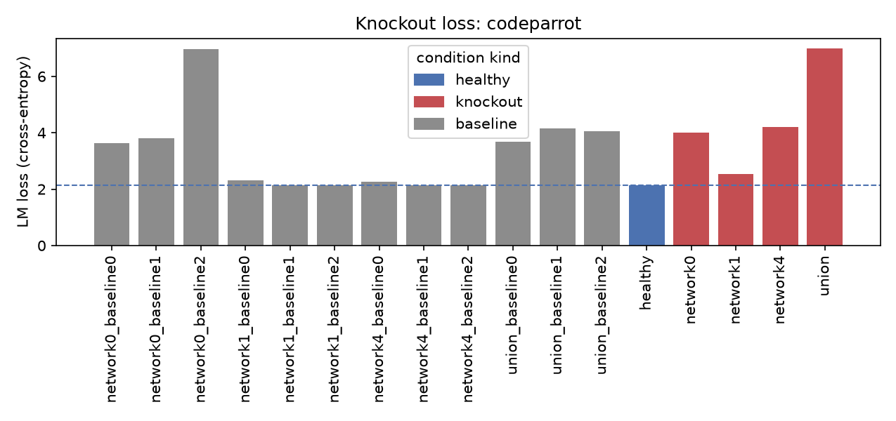
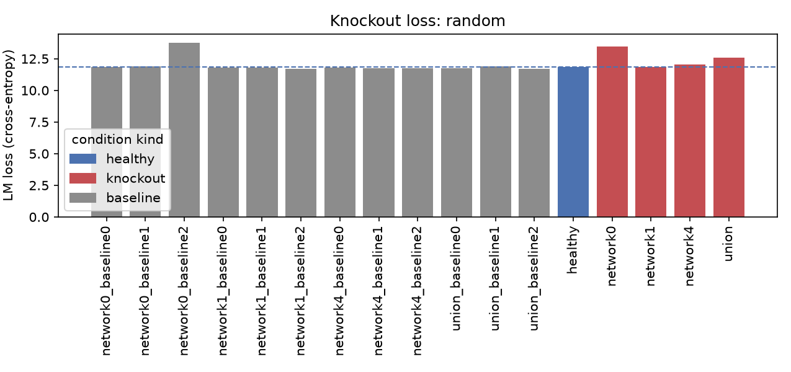
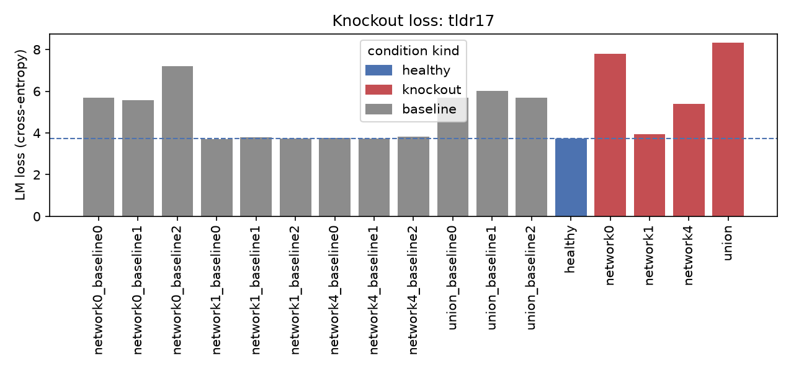
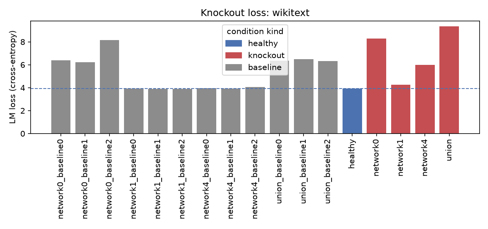

knockout_mode-mean__knockout_thresh-0.5
params: knockout_mode=mean, knockout_thresh=0.5
output: /Users/sebastianchegini/surf/fork/parcelmate/parcelmate/c_outputs/sweeps/knockout_iter2/knockout_mode-mean__knockout_thresh-0.5 (332 plots)
knockout loss summary
| condition | kind | domain | loss | perplexity | n_tokens |
|---|---|---|---|---|---|
| healthy | healthy | codeparrot | 2.140 | 8.500 | 50078 |
| network0 | knockout | codeparrot | 4.005 | 54.880 | 50078 |
| network0_baseline0 | baseline | codeparrot | 3.623 | 37.448 | 50078 |
| network0_baseline1 | baseline | codeparrot | 3.802 | 44.800 | 50078 |
| network0_baseline2 | baseline | codeparrot | 6.960 | 1053.180 | 50078 |
| network1 | knockout | codeparrot | 2.541 | 12.688 | 50078 |
| network1_baseline0 | baseline | codeparrot | 2.316 | 10.135 | 50078 |
| network1_baseline1 | baseline | codeparrot | 2.133 | 8.439 | 50078 |
| network1_baseline2 | baseline | codeparrot | 2.130 | 8.417 | 50078 |
| network4 | knockout | codeparrot | 4.191 | 66.110 | 50078 |
| network4_baseline0 | baseline | codeparrot | 2.260 | 9.581 | 50078 |
| network4_baseline1 | baseline | codeparrot | 2.137 | 8.476 | 50078 |
| network4_baseline2 | baseline | codeparrot | 2.143 | 8.527 | 50078 |
| union | knockout | codeparrot | 7.002 | 1098.329 | 50078 |
| union_baseline0 | baseline | codeparrot | 3.677 | 39.531 | 50078 |
| union_baseline1 | baseline | codeparrot | 4.153 | 63.624 | 50078 |
| union_baseline2 | baseline | codeparrot | 4.046 | 57.177 | 50078 |
| healthy | healthy | random | 11.829 | 137143.406 | 50078 |
| network0 | knockout | random | 13.450 | 694091.375 | 50078 |
| network0_baseline0 | baseline | random | 11.865 | 142167.891 | 50078 |
| network0_baseline1 | baseline | random | 11.901 | 147348.859 | 50078 |
| network0_baseline2 | baseline | random | 13.781 | 966356.750 | 50078 |
| network1 | knockout | random | 11.868 | 142647.781 | 50078 |
| network1_baseline0 | baseline | random | 11.819 | 135875.922 | 50078 |
| network1_baseline1 | baseline | random | 11.794 | 132495.812 | 50078 |
| network1_baseline2 | baseline | random | 11.723 | 123419.508 | 50078 |
| network4 | knockout | random | 12.043 | 169951.891 | 50078 |
| network4_baseline0 | baseline | random | 11.797 | 132911.375 | 50078 |
| network4_baseline1 | baseline | random | 11.752 | 127053.047 | 50078 |
| network4_baseline2 | baseline | random | 11.734 | 124786.297 | 50078 |
| union | knockout | random | 12.592 | 294134.969 | 50078 |
| union_baseline0 | baseline | random | 11.743 | 125834.688 | 50078 |
| union_baseline1 | baseline | random | 11.904 | 147869.297 | 50078 |
| union_baseline2 | baseline | random | 11.721 | 123140.727 | 50078 |
| healthy | healthy | tldr17 | 3.722 | 41.348 | 50078 |
| network0 | knockout | tldr17 | 7.802 | 2445.241 | 50078 |
| network0_baseline0 | baseline | tldr17 | 5.677 | 292.182 | 50078 |
| network0_baseline1 | baseline | tldr17 | 5.573 | 263.215 | 50078 |
| network0_baseline2 | baseline | tldr17 | 7.186 | 1320.976 | 50078 |
| network1 | knockout | tldr17 | 3.948 | 51.831 | 50078 |
| network1_baseline0 | baseline | tldr17 | 3.715 | 41.040 | 50078 |
| network1_baseline1 | baseline | tldr17 | 3.799 | 44.669 | 50078 |
| network1_baseline2 | baseline | tldr17 | 3.743 | 42.226 | 50078 |
| network4 | knockout | tldr17 | 5.383 | 217.737 | 50078 |
| network4_baseline0 | baseline | tldr17 | 3.771 | 43.419 | 50078 |
| network4_baseline1 | baseline | tldr17 | 3.732 | 41.750 | 50078 |
| network4_baseline2 | baseline | tldr17 | 3.814 | 45.314 | 50078 |
| union | knockout | tldr17 | 8.340 | 4188.896 | 50078 |
| union_baseline0 | baseline | tldr17 | 5.677 | 292.116 | 50078 |
| union_baseline1 | baseline | tldr17 | 6.025 | 413.567 | 50078 |
| union_baseline2 | baseline | tldr17 | 5.695 | 297.403 | 50078 |
| healthy | healthy | wikitext | 3.911 | 49.943 | 50078 |
| network0 | knockout | wikitext | 8.278 | 3935.296 | 50078 |
| network0_baseline0 | baseline | wikitext | 6.396 | 599.262 | 50078 |
| network0_baseline1 | baseline | wikitext | 6.215 | 500.109 | 50078 |
| network0_baseline2 | baseline | wikitext | 8.159 | 3495.512 | 50078 |
| network1 | knockout | wikitext | 4.264 | 71.103 | 50078 |
| network1_baseline0 | baseline | wikitext | 3.940 | 51.402 | 50078 |
| network1_baseline1 | baseline | wikitext | 3.886 | 48.724 | 50078 |
| network1_baseline2 | baseline | wikitext | 3.884 | 48.614 | 50078 |
| network4 | knockout | wikitext | 5.991 | 399.628 | 50078 |
| network4_baseline0 | baseline | wikitext | 3.958 | 52.333 | 50078 |
| network4_baseline1 | baseline | wikitext | 3.934 | 51.117 | 50078 |
| network4_baseline2 | baseline | wikitext | 4.050 | 57.395 | 50078 |
| union | knockout | wikitext | 9.367 | 11690.443 | 50078 |
| union_baseline0 | baseline | wikitext | 6.368 | 582.756 | 50078 |
| union_baseline1 | baseline | wikitext | 6.500 | 665.291 | 50078 |
| union_baseline2 | baseline | wikitext | 6.307 | 548.504 | 50078 |
connectivity


knockout




parcellation


stability